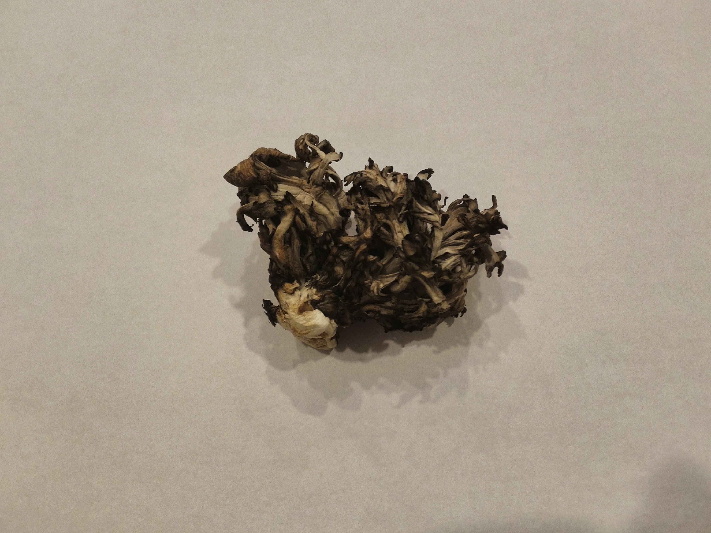

Maitake
Where to find
The Maitake is a common fungus found in a cluster at the base of trees, oak trees in particular. Being native to China, Japan, and North America, this is a widely eaten fungus. The grouping and feathery appearance has gained it the nickname "hen of the forest" in English speaking countries. In Japan, where specimens can grow to over 100 lbs, they are known as the 'king of mushrooms'.
Best ways to cook the Maitake
You want to be sure you have a nice young mushroom to start out with, as this family of fungus becomes tough and inedible as it matures. You also only want to eat the caps, not the tough stalk they grow out of. Be cautious when eating, as it has a very powerful flavor that some love, but can make others sick. Test it out to see what camp you fall into. Once that's out of the way, this is a very versatile 'shroom. They can be stir fried, baked, sauteed, stuffed, or even drank as a tea. They can also be frozen, so you can enjoy Maitake all year round.